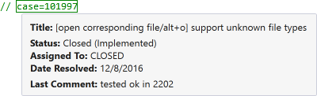

Source Links
Source Links connect comment substrings to external applications and websites, such as bug trackers, case managers, documentation, and source code control systems. Comment substrings that match user-defined patterns are automatically active links in the text editor.

Enable and define Source Links in the options dialog of Visual Assist. Default support is available for simple web-based applications, FogBugz, and GitHub.
Learn more.